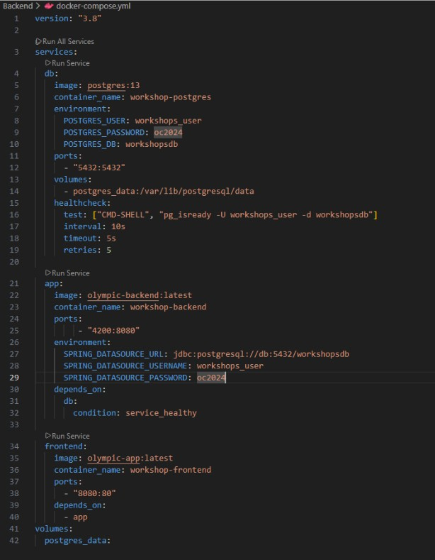
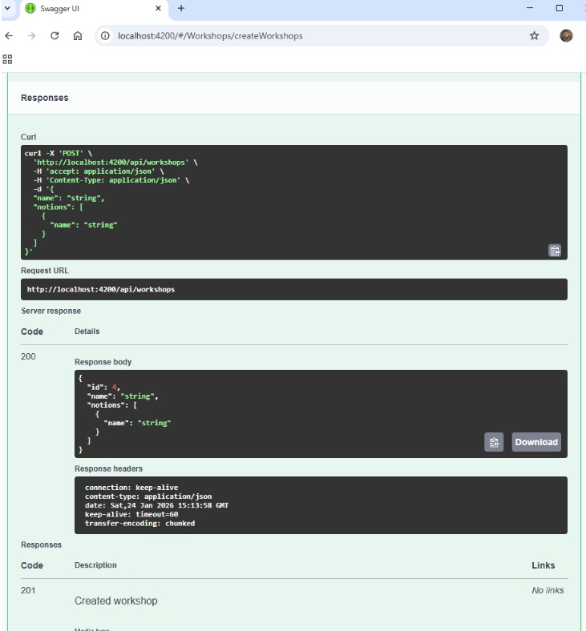

4️⃣ Vérification du frontend
Le frontend est également accessible via le port configuré dans Docker Compose. L’application est pleinement fonctionnelle.

✔ Frontend accessible
Lancement simultané du backend et frontend avec Docker Compose
Le fichier docker-compose.yml est créé pour orchestrer le backend et le frontend dans des conteneurs séparés.
✔ Fichier docker-compose créé
Après le démarrage, il est possible d’effectuer les requêtes vers le backend via les API exposées par Docker Compose.
✔ Requêtes backend fonctionnelles
Le frontend est également accessible via le port configuré dans Docker Compose. L’application est pleinement fonctionnelle.
✔ Frontend accessible